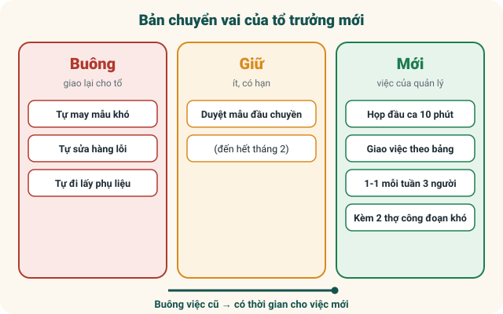

K7 · Tự học và phát triển nghề nghiệp › Bậc 5 Dẫn dắt
Từ chuyên viên thành quản lý
Bài này làm Tờ 1: Bản chuyển vai của Sổ tay quản lý. Mẫu in. Khóa N5 nối tiếp Kèm cặp đồng nghiệp và Làm mới nghề nghiệp của khóa N4.
1. Mục tiêu
- Lập Bản chuyển vai: 3 việc buông, 2 việc giữ, 4 việc mới của người quản lý.
- Xin phản hồi nhiều chiều bằng 3 câu hỏi: nên tiếp tục, nên bắt đầu, nên dừng.
2. Khởi động truy xuất
- Bốn nấc giao việc khi kèm cặp là gì?
- Kỹ năng "mang theo được" là gì? Kể một ví dụ của bạn.
Đáp án
- Làm mẫu, làm cùng, quan sát, tự làm.
- Kỹ năng dùng được ở vai trò mới, như ra quyết định, thuyết phục, kèm cặp.
Xem lại: Kèm cặp đồng nghiệp, Làm mới nghề nghiệp.
3. Giải thích
Khi lên quản lý, thước đo thành công của bạn đổi. Trước đây, bạn được đánh giá qua việc mình làm. Bây giờ, bạn được đánh giá qua kết quả của cả đội.
Nhiều người mới lên quản lý vẫn ôm việc chuyên môn. Họ làm vì quen tay và nhanh hơn. Kết quả: đội chờ họ, còn việc quản lý bị bỏ trống.
Bản chuyển vai có ba cột.
- Buông: việc chuyên môn bạn giao lại cho người khác. Chọn việc người trong đội làm được, hoặc học được trong vài tuần.
- Giữ: một, hai việc chuyên môn chỉ bạn làm tốt lúc này. Ghi kèm ngày dự kiến giao lại.
- Mới: việc của người quản lý. Ví dụ: đặt mục tiêu đội, giao việc, gặp 1-1, gỡ vướng, phát triển người.

Đặt lịch cho việc mới. Việc quản lý dễ bị việc gấp lấn mất. Hãy chặn giờ cố định trong tuần. Ví dụ: 1-1 chiều thứ Ba, rà tiến độ sáng thứ Sáu.
Xin phản hồi nhiều chiều. Hỏi cấp trên, đồng cấp và người trong đội. Dùng ba câu ngắn:
Ba câu xin phản hồi
- Nên tiếp tụcĐiều tôi đang làm giúp được bạn là gì?
- Nên bắt đầuĐiều tôi chưa làm mà nên làm là gì?
- Nên dừngĐiều tôi làm đang gây khó cho bạn là gì?
Người trong đội có thể ngại nói thật với cấp trên. Cho họ trả lời bằng giấy không ghi tên, hoặc nhờ người thứ ba thu. Khi nhận được góp ý, cảm ơn trước. Sau đó chọn một điều để sửa và nói cho đội biết.
Ba bẫy thường gặp: làm thay đội, né cuộc nói chuyện khó, và ưu ái bạn thân cũ. Bản chuyển vai và phản hồi nhiều chiều giúp bạn sớm nhận ra các bẫy này.
4. Ví dụ tại nơi làm việc Việt Nam
Tình huống giả định. Chị Hạnh là thợ may giỏi nhất chuyền ở một xưởng may tại Long An. Chị vừa lên tổ trưởng, quản lý 25 người.
Tuần đầu, chị Hạnh vẫn tự may mẫu khó và tự sửa hàng lỗi. Chuyền chờ chị, năng suất giảm.
Chị lập Bản chuyển vai. Buông: may mẫu khó, sửa hàng lỗi, đi lấy phụ liệu. Giữ: duyệt mẫu đầu chuyền, đến hết tháng 2. Mới: họp đầu ca 10 phút, giao việc theo bảng, gặp 1-1 mỗi tuần 3 người, kèm 2 thợ lên may công đoạn khó.
Sau một tháng, chị phát 25 phiếu ba câu, không ghi tên. Nhiều phiếu viết "nên dừng: đứng sau lưng xem may". Chị cảm ơn cả tổ ở buổi họp đầu ca. Chị nói sẽ chỉ đến bàn khi được gọi, hoặc khi kiểm hàng theo giờ.
Vì sao cách này tốt: chị chọn việc buông cụ thể, giữ ít và có hạn. Chị xin góp ý theo cách an toàn, rồi sửa một điều và nói cho tổ biết.
5. Thực hành
Tình huống giả định. Bạn là nhân viên kinh doanh giỏi nhất ở một công ty thiết bị văn phòng tại Đà Nẵng. Bạn vừa lên trưởng nhóm 6 người. Bạn vẫn giữ 12 khách lớn của riêng mình.
Lập Bản chuyển vai của bạn. Viết thêm cách bạn sẽ xin phản hồi từ nhóm.
Gợi ý 1
Với 12 khách lớn, khách nào người trong nhóm chăm được? Khách nào cần bạn thêm một thời gian?
Gợi ý 2
Việc mới phải có lịch cụ thể: thứ mấy, giờ nào, bao lâu.
Lời giải mẫu
- Buông: 9 khách lớn, chia cho 3 người đã có kinh nghiệm; tự soạn báo giá; tự nhập đơn vào hệ thống.
- Giữ: 3 khách lớn nhất, đến hết quý 1, mỗi khách có một người trong nhóm đi cùng.
- Mới: họp nhóm sáng thứ Hai 30 phút; 1-1 mỗi người 30 phút mỗi hai tuần; đi gặp khách cùng nhân viên mới; rà số liệu bán hàng chiều thứ Sáu.
- Phản hồi: sau 6 tuần, gửi 3 câu qua biểu mẫu không ghi tên. Báo lại cho nhóm điều sẽ sửa.
(Số liệu là giả định.)
6. Tự kiểm tra
Chọn đáp án. Mỗi lựa chọn đều có giải thích.
Câu 1. Một trưởng nhóm mới vẫn tự làm phần khó nhất của mọi dự án. Hệ quả dễ thấy nhất là gì?
-
Chưa đúng. Xem thì có học, nhưng đội không được tự làm. Họ vẫn phụ thuộc vào trưởng nhóm.
-
Đúng. Đúng. Thời gian của trưởng nhóm có hạn. Ôm việc chuyên môn thì việc quản lý bị lấn mất.
-
Chưa đúng. Xong đúng hạn lần này, nhưng đội không lớn lên. Khi trưởng nhóm vắng, việc sẽ tắc.
Câu 2. Việc nào nên xếp vào cột "Giữ" của Bản chuyển vai?
-
Chưa đúng. Nếu giữ mọi việc mình làm nhanh hơn, cột Buông sẽ trống.
-
Đúng. Đúng. Cột Giữ nên ít và có hạn, để việc đó dần chuyển sang người khác.
-
Chưa đúng. Thích là chuyện dễ hiểu, nhưng tiêu chí chọn là đội cần gì, không phải mình thích gì.
Câu 3. Bạn muốn biết đội nghĩ gì về cách mình quản lý. Cách nào dễ có câu trả lời thật nhất?
-
Chưa đúng. Trước mặt mọi người và trước sếp, ít ai dám góp ý thật.
-
Đúng. Đúng. Câu hỏi cụ thể và cách trả lời an toàn giúp người ta dám nói thật.
-
Chưa đúng. Chờ quá lâu. Bạn mất nhiều tháng có thể đã sửa được.
Câu 4. Nhiều phiếu viết "nên dừng: sửa bài của em trước mặt khách". Bạn làm gì trước tiên?
-
Chưa đúng. Giải thích ngay dễ nghe như bào chữa. Người góp ý sẽ thấy nói ra cũng vô ích.
-
Đúng. Đúng. Cảm ơn và hành động cho đội thấy góp ý có tác dụng. Lần sau họ sẽ tiếp tục nói thật.
-
Chưa đúng. Truy tìm người viết phá vỡ lời hứa không ghi tên. Đội sẽ không bao giờ góp ý thật nữa.
7. Phản tư
- Việc chuyên môn nào bạn khó buông nhất? Vì sao?
- Nếu đội chấm bạn bằng ba câu hỏi hôm nay, câu "nên dừng" có thể là gì?
8. Áp dụng thật
Trong 7 ngày tới, làm Tờ 1. Chặn trong lịch hai khung giờ cố định cho việc quản lý. Gửi ba câu hỏi phản hồi cho ít nhất 3 người.
9. Siêu dữ liệu
| skill | K7 · Tự học và phát triển nghề nghiệp |
|---|---|
| level | Bậc 5 · Dẫn dắt |
| group | N5 |
| framework_map | WEF: Leadership and social influence; Curiosity and lifelong learning; SkillsFuture CCS: Learning Agility; Developing People; NACE: Career and Self-Development; Leadership; CSfW: 1a Manage career and work life (chỉ dẫn chiếu) |
| updated | 2026-11-14 |
Hoàn thành bài
Đánh dấu đã học để site gợi ý lịch ôn sau 1, 3 và 7 ngày. Dữ liệu chỉ lưu trên máy của bạn.
Lịch ôn gợi ý: